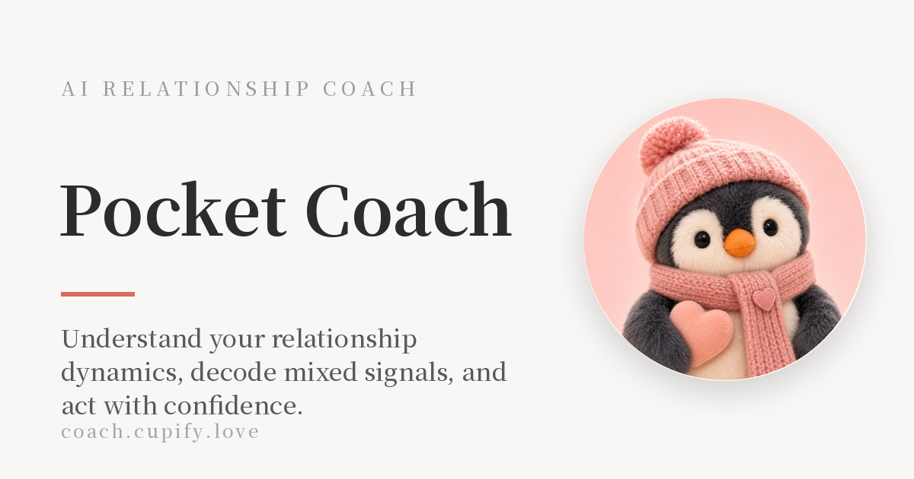
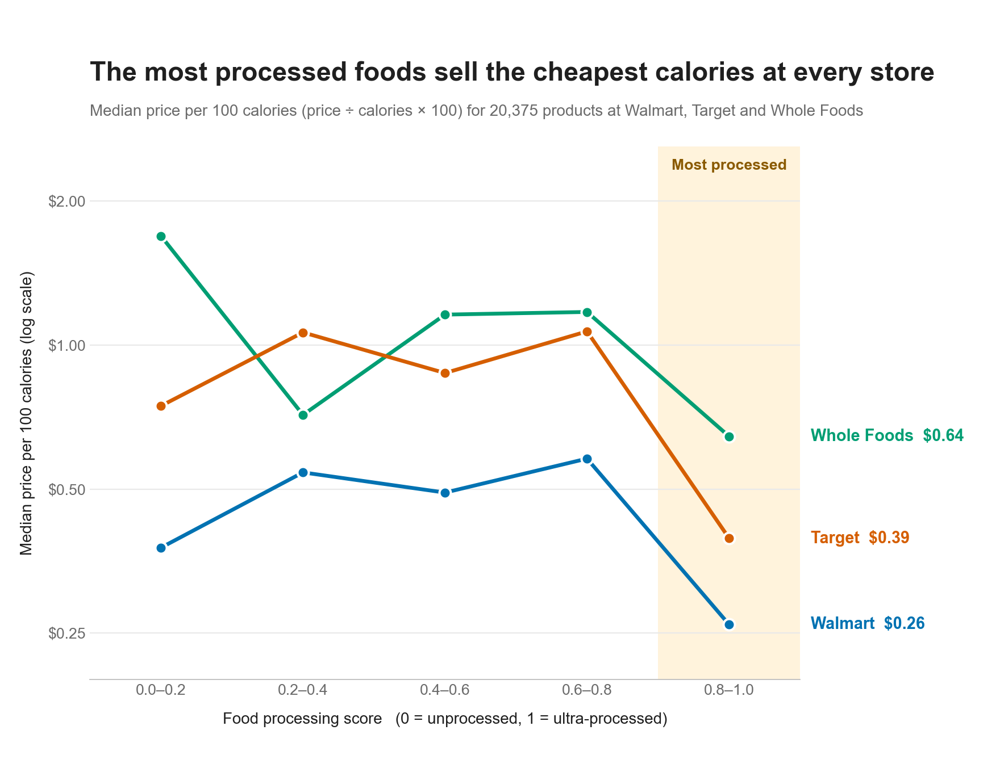
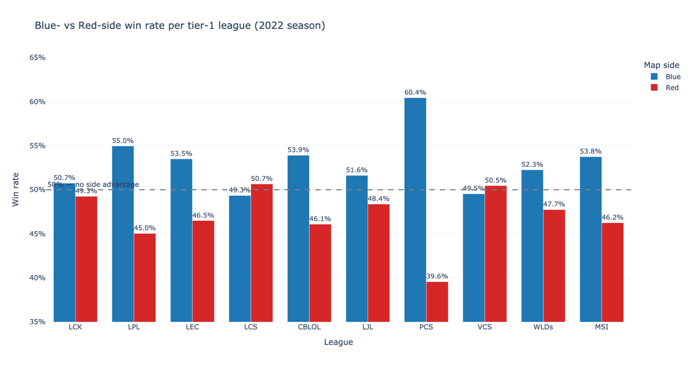
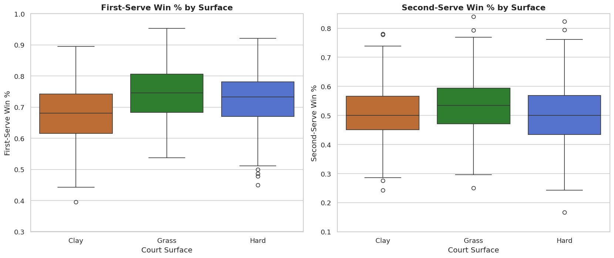
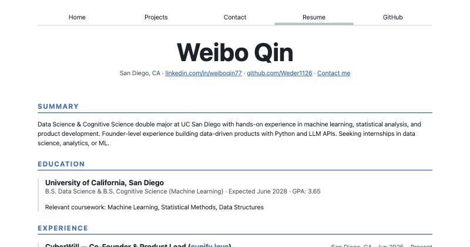

A 4-minute relationship personality test from my startup, CyberWill. It scores users on 4 dimensions, maps them to 16 love personality types, and checks compatibility between two result IDs. It also includes an AI advisor for relationship questions.

Cupify's iPhone app. Users can talk through a situation on a voice call, get a 3-stop date route built from what they know about the other person, and see 3 reply suggestions that range from bold to reserved.
Ultra-Processed Food Prices

DSC 106 Project 1. Uses GroceryDB to show that the most processed foods have the cheapest calories at Walmart, Target and Whole Foods. Built with pandas and Matplotlib.

DSC 80 project with Kevin Cui. Across 12,529 pro games from 2022, Blue side won 52.5% of the time and Red side 47.5% (permutation test, p < 0.0001). A logistic regression built on each team's prior win rate predicts the winner with 58.7% accuracy.

COGS 108 group project. Using 970 player-level observations from 485 Grand Slam matches in 2024, we found first-serve win rates differ significantly by court surface (Kruskal-Wallis H = 61.21, p < 0.001). Grass is highest and clay lowest.

Hand-written HTML and CSS with no framework. It uses flexbox for the nav, grid and subgrid for the contact form and this page, and nested CSS for the resume.